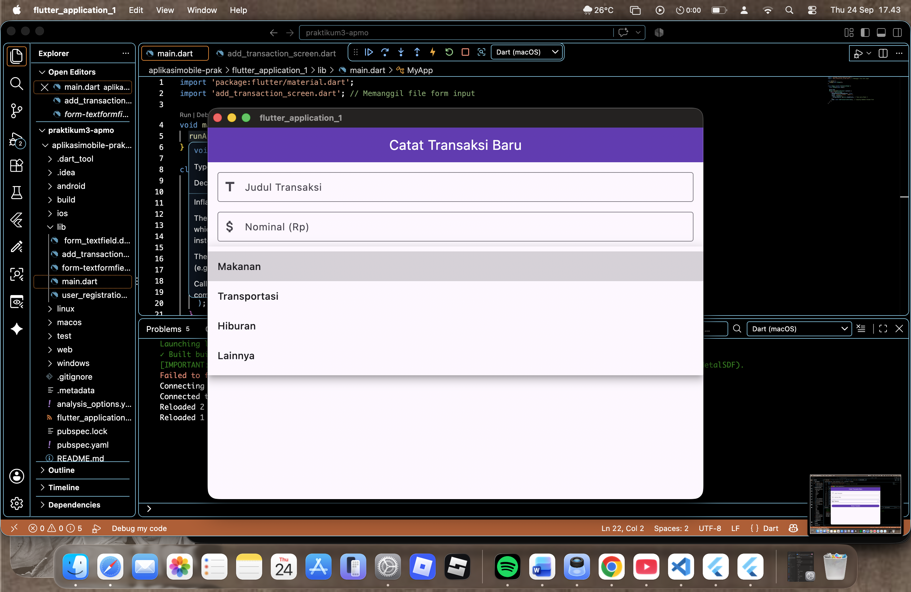
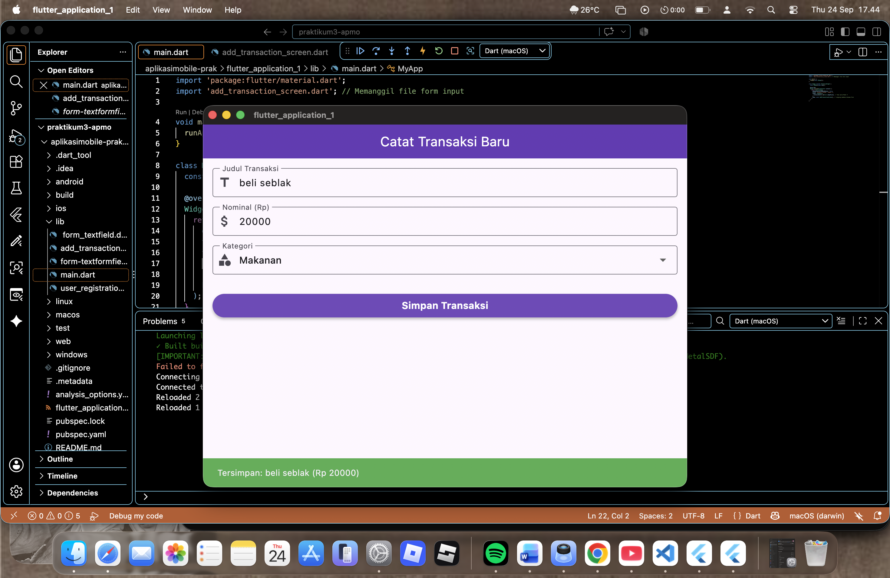
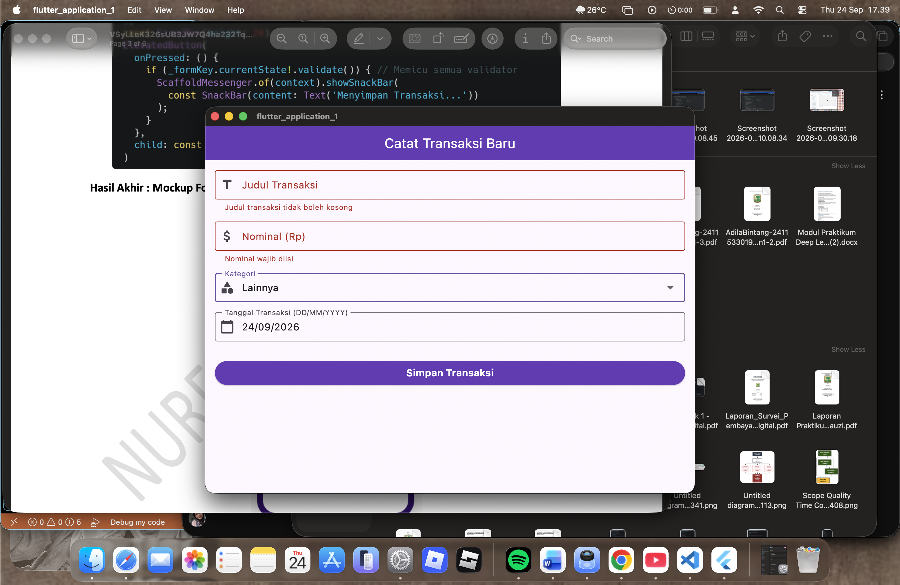
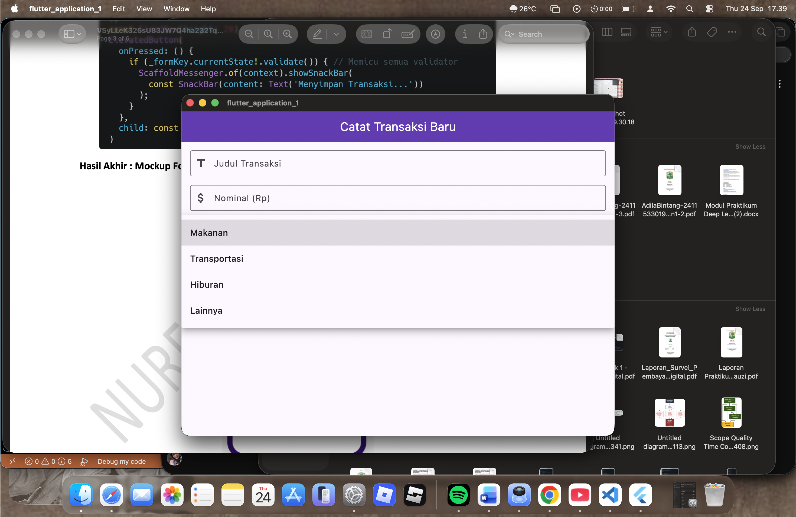
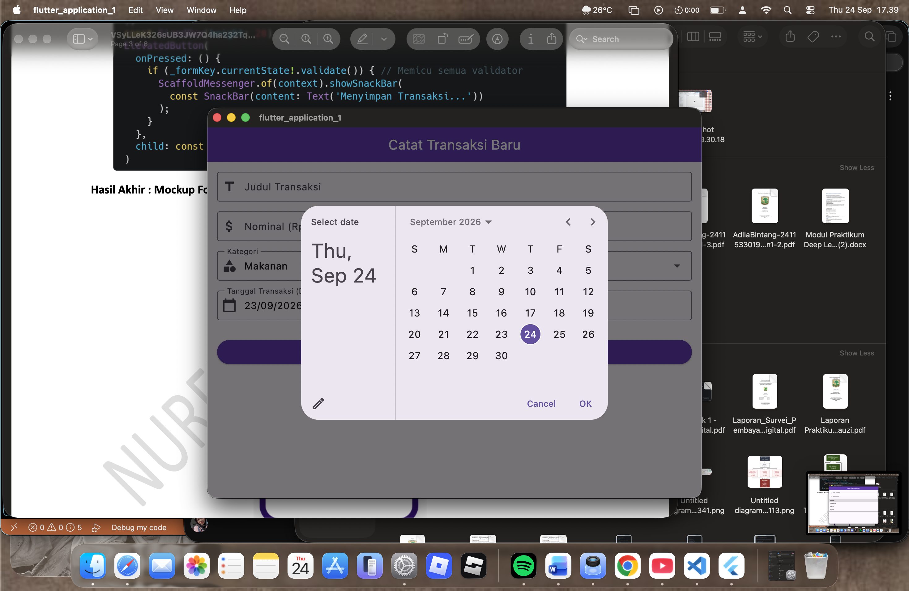

PRAKTIKUM 3: Input Widgets & Forms (Menangkap Data, Dropdown, dan Validasi)
NIM: 2411533019 - Adila Bintang Fauzi
Pengembangan aplikasi mobile berbasis formulir menuntut pengelolaan interaksi input data pengguna yang aman, responsif, dan terstruktur. Pada framework Flutter, penanganan input transaksi dan formulir kompleks dikelola melalui empat komponen pilar utama: Form, GlobalKey<FormState>, TextFormField, dan TextEditingController.
Widget Form bertindak sebagai kontainer induk yang menyatukan seluruh komponen input di dalamnya agar dapat divalidasi dan diatur secara terpusat. Untuk mengontrol status formulir dari luar widget tree, Flutter menyediakan GlobalKey<FormState> yang memiliki fungsi validate() untuk memicu pemeriksaan seluruh input field secara serentak. Komponen TextFormField dilengkapi dengan properti fungsi validator yang mengevaluasi apakah data yang dimasukkan memenuhi kriteria (mengembalikan nilai null jika data valid, atau mengembalikan teks String berisi pesan error merah di bawah kolom input jika data kosong atau salah format).
Untuk menangkap dan membaca teks masukan secara real-time, digunakan TextEditingController yang wajib dibersihkan pada lifecycle method dispose() guna mencegah timbulnya kebocoran memori (memory leak). Selain field teks biasa, Flutter menyediakan komponen dropdown statis DropdownButtonFormField untuk pemilihan opsi kategori data, fungsi dialog showDatePicker untuk pemilihan tanggal interaktif, serta widget SingleChildScrollView untuk mencegah terjadinya error pixel overflow saat keyboard virtual muncul di layar smartphone.
TextEditingController.DropdownButtonFormField untuk pemilihan kategori data.showDatePicker bawaan Flutter.SingleChildScrollView agar bebas dari galat layout overflow.lib/add_transaction_screen.dart
Membuat berkas baru add_transaction_screen.dart berbasis StatefulWidget karena isi formulir (teks dan dropdown) akan terus berubah secara dinamis saat pengguna berinteraksi. Menyiapkan GlobalKey<FormState> untuk memicu validasi, TextEditingController untuk kolom judul dan nominal, serta state _selectedCategory untuk menampung pilihan dropdown.
// NIM: 2411533019 - Adila Bintang Fauzi
import 'package:flutter/material.dart';
class AddTransactionScreen extends StatefulWidget {
const AddTransactionScreen({super.key});
@override
State<AddTransactionScreen> createState() => _AddTransactionScreenState();
}
class _AddTransactionScreenState extends State<AddTransactionScreen> {
// GlobalKey untuk mengontrol form dan memicu validasi
final _formKey = GlobalKey<FormState>();
// Controller untuk mengambil teks dari input
final _titleController = TextEditingController();
final _amountController = TextEditingController();
// State untuk Dropdown
String _selectedCategory = 'Makanan';
final List<String> _categories = ['Makanan', 'Transportasi', 'Hiburan', 'Lainnya'];
@override
void dispose() {
// Bersihkan controller saat halaman ditutup untuk mencegah memory leak
_titleController.dispose();
_amountController.dispose();
super.dispose();
}
@override
Widget build(BuildContext context) {
return Scaffold(
appBar: AppBar(
title: const Text("Catat Transaksi Baru"),
backgroundColor: Colors.deepPurple,
foregroundColor: Colors.white,
),
// SingleChildScrollView mencegah error layout saat keyboard muncul
body: SingleChildScrollView(
padding: const EdgeInsets.all(16.0),
child: Form(
key: _formKey,
child: Column(
crossAxisAlignment: CrossAxisAlignment.stretch,
children: [
// Input 1: Judul Transaksi
TextFormField(
controller: _titleController,
decoration: const InputDecoration(
labelText: "Judul Transaksi",
border: OutlineInputBorder(),
prefixIcon: Icon(Icons.title),
),
validator: (value) {
if (value == null || value.isEmpty) {
return "Judul transaksi tidak boleh kosong";
}
return null;
},
),
const SizedBox(height: 16),
// Input 2: Nominal Saldo (Keyboard Angka)
TextFormField(
controller: _amountController,
keyboardType: TextInputType.number,
decoration: const InputDecoration(
labelText: "Nominal (Rp)",
border: OutlineInputBorder(),
prefixIcon: Icon(Icons.attach_money),
),
validator: (value) {
if (value == null || value.isEmpty) {
return "Nominal wajib diisi";
}
if (int.tryParse(value) == null) {
return "Harus berupa angka bulat yang valid";
}
return null;
},
),
const SizedBox(height: 16),
// Input 3: Kategori Dropdown
DropdownButtonFormField<String>(
value: _selectedCategory,
decoration: const InputDecoration(
labelText: "Kategori",
border: OutlineInputBorder(),
prefixIcon: Icon(Icons.category),
),
items: _categories.map((String category) {
return DropdownMenuItem<String>(
value: category,
child: Text(category),
);
}).toList(),
onChanged: (String? newValue) {
setState(() {
_selectedCategory = newValue!;
});
},
),
const SizedBox(height: 32),
// Tombol Simpan
ElevatedButton(
style: ElevatedButton.styleFrom(
backgroundColor: Colors.deepPurple,
foregroundColor: Colors.white,
padding: const EdgeInsets.symmetric(vertical: 16),
),
onPressed: () {
// Jalankan validasi
if (_formKey.currentState!.validate()) {
// Jika lolos validasi, tampilkan pop-up SnackBar sukses
ScaffoldMessenger.of(context).showSnackBar(
SnackBar(
content: Text(
'Tersimpan: ${_titleController.text} (Rp ${_amountController.text})',
),
backgroundColor: Colors.green,
),
);
}
},
child: const Text(
"Simpan Transaksi",
style: TextStyle(fontSize: 16, fontWeight: FontWeight.bold),
),
)
],
),
),
),
);
}
}lib/main.dart
Menghubungkan layar formulir AddTransactionScreen sebagai home pada konfigurasi tema MaterialApp di dalam lib/main.dart:
import 'package:flutter/material.dart';
import 'add_transaction_screen.dart'; // Memanggil file form input
void main() {
runApp(const MyApp());
}
class MyApp extends StatelessWidget {
const MyApp({super.key});
@override
Widget build(BuildContext context) {
return MaterialApp(
debugShowCheckedModeBanner: false,
title: 'Expense Tracker - Modul 3',
theme: ThemeData(
primarySwatch: Colors.deepPurple, // Tema warna Modul 3
),
home: const AddTransactionScreen(), // Langsung membuka halaman Form
);
}
}Tampilan antarmuka awal formulir transaksi pada layar perangkat:

Tampilan interaksi pilihan DropdownButtonFormField kategori saat dibuka:

Tugas: Input Tanggal Transaksi & Pemilih Tanggal (showDatePicker)
Menambahkan satu input baru sebelum tombol Simpan untuk mengisi Tanggal Transaksi dengan ketentuan:
DD/MM/YYYY).showDatePicker yang memunculkan kalender pemilih tanggal.Kode Program Penambahan Fitur Input Tanggal & showDatePicker:
// 1. Controller untuk Tanggal Transaksi
final _dateController = TextEditingController();
// 2. Fungsi Asynchronous untuk Memunculkan Dialog Kalender showDatePicker
Future<void> _selectDate(BuildContext context) async {
final DateTime? picked = await showDatePicker(
context: context,
initialDate: DateTime.now(),
firstDate: DateTime(2000),
lastDate: DateTime(2101),
);
if (picked != null) {
setState(() {
// Format tanggal DD/MM/YYYY
_dateController.text =
"${picked.day.toString().padLeft(2, '0')}/${picked.month.toString().padLeft(2, '0')}/${picked.year}";
});
}
}
// 3. Widget TextFormField Tanggal (Diletakkan sebelum Tombol Simpan)
TextFormField(
controller: _dateController,
readOnly: true,
onTap: () => _selectDate(context),
decoration: InputDecoration(
labelText: "Tanggal Transaksi (DD/MM/YYYY)",
border: const OutlineInputBorder(),
prefixIcon: const Icon(Icons.calendar_today),
suffixIcon: IconButton(
icon: const Icon(Icons.add_circle_outline),
onPressed: () => _selectDate(context),
),
),
validator: (value) {
if (value == null || value.isEmpty) {
return "Tanggal transaksi wajib diisi";
}
return null;
},
),Pembahasan Logika Kode Program Tugas:
_dateController menampung nilai teks tanggal terpilih. Field diatur dengan properti readOnly: true sehingga keyboard virtual tidak muncul, melainkan langsung memicu pemanggilan _selectDate(context) saat kolom diketuk (onTap).DateTime. Nilai tanggal, bulan, dan tahun yang dipilih kemudian diformat menjadi string DD/MM/YYYY dengan bantuan padLeft(2, '0') agar format dua digit tetap terjaga rapi.null. Jika pengguna langsung menekan tombol simpan tanpa memilih tanggal, sistem menolak submit dan memunculkan notifikasi error.Tampilan dialog kalender pemilih tanggal interaktif saat kolom tanggal diklik:

Tampilan formulir transaksi setelah semua field diisi (Judul, Nominal, Kategori, dan Tanggal Transaksi):

Tampilan pesan galat validasi warna merah saat tombol simpan ditekan ketika kolom wajib masih dikosongkan:

Berdasarkan pelaksanaan Praktikum 3 mengenai Input Widgets & Forms (Menangkap Data, Dropdown, dan Validasi) pada Flutter, dapat ditarik beberapa kesimpulan penting sebagai berikut:
Form yang dihubungkan dengan GlobalKey<FormState> memungkinkan eksekusi validasi massal pada seluruh komponen TextFormField melalui pemanggilan satu method _formKey.currentState!.validate() secara kolektif dan efisien.
validator terbukti sangat efektif untuk mencegah kesalahan input pengguna, baik untuk memastikan kolom tidak kosong maupun memvalidasi format angka numerik dengan fungsi int.tryParse().
DropdownButtonFormField dan dialog showDatePicker menyajikan pengalaman pengguna (UX) yang sangat intuitif, konsisten, serta mencegah kesalahan pengetikan manual data tanggal atau kategori.
TextEditingController yang dibuat wajib dibersihkan secara eksplisit pada method dispose() guna menghindari kebocoran memori (memory leak) pada perangkat pengguna.